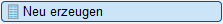
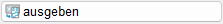

")
")
Erzeugen einer neuen Stahl-Gesamtliste oder einer Kombination von Einzellisten aus einer oder mehreren Zeichnungen. Öffnet den Dialog Stahlliste. Die Stahlliste kann auf der Zeichnung abgelegt, gedruckt oder als PDF-Datei ausgegeben werden.
Beim Ablegen der Stahlliste in der Zeichnung werden Makrotexte, die in der Planbeschreibung verwendet wurden, aufgelöst. Nachträgliche Änderungen der Makrotexte wirken sich daher nicht auf die abgelegte Stahlliste aus.
Stahlliste auf der Zeichnung ablegen
§Konfigurieren Sie die Stahlliste im Dialog Stahlliste.
§Klicken Sie im Dialog Stahlliste auf die Schaltfläche Ansicht.
Öffnet den Dialog Ansicht.
§Klicken Sie in der Symbolleiste auf .
Der Dialog wird geschlossen und die Stahlliste wird an den Cursor gehängt.
§Führen Sie einen der folgenden Schritte aus:
a)Wenn eine Stahlliste bereits in der Zeichnung enthalten, können Sie sie ersetzen, beibehalten oder den Vorgang abbrechen.
-Ja: Die in der Zeichnung abgelegte Stahlliste wird ersetzt. Mit einem Linksklick können Sie die Stahlliste an eine neue Position setzen. Mit einem Rechtsklick wird der Einfügepunkt (links unten) der aktuell abgesetzten Stahlliste übernommen.
-Nein: Um die in der Zeichnung abgelegte Stahlliste beizubehalten, klicken Sie auf Nein. Legen Sie die neue Stahlliste mit einem Linksklick auf der Zeichnung ab.
-Abbrechen: Der Vorgang wird abgebrochen.
b)Platzieren Sie die Stahlliste auf der Zeichenoberfläche mit einem Linksklick. [Lage der Zeichnung].
Sie können die Stahlliste bearbeiten und über die Schaltfläche 
Stahlliste drucken
§Klicken Sie im Dialog Stahlliste auf die Schaltfläche Ansicht.
Öffnet den Dialog Ansicht.
§Klicken Sie auf das Symbol .
Öffnet den Dialog Druckparameter.
§Wählen Sie im Dialogbereich Drucker den entsprechenden Drucker für die Ausgabe.
Die Schaltfläche Eigenschaften öffnet die Druckereigenschaften des gewählten Druckers. Passen Sie die Eigenschaften ggf. an.
§Um die Ausgabe zu starten, klicken Sie auf Weiter.
Zugehörige Aufgaben:
·Stahlliste für ausgewählte Positionen erzeugen
·Mehrere Stahllisten mit dem eDocPrinter ausgeben
Zugehörige Referenzen:
Siehe auch: